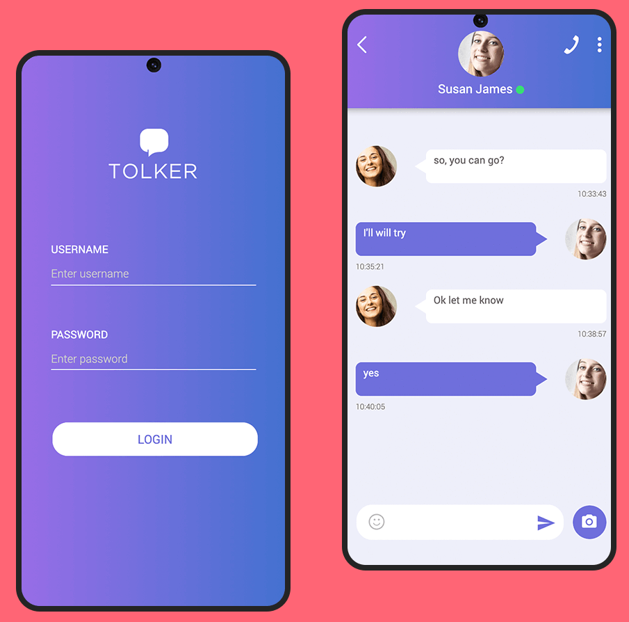
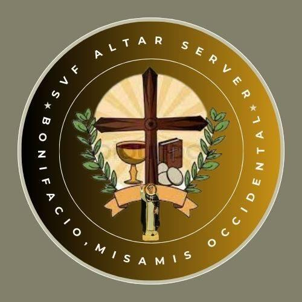
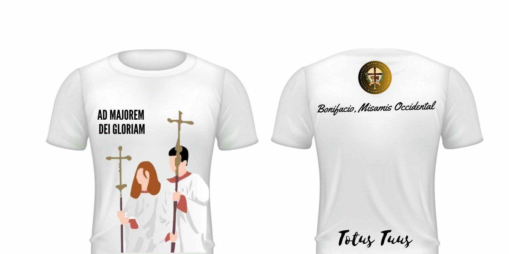
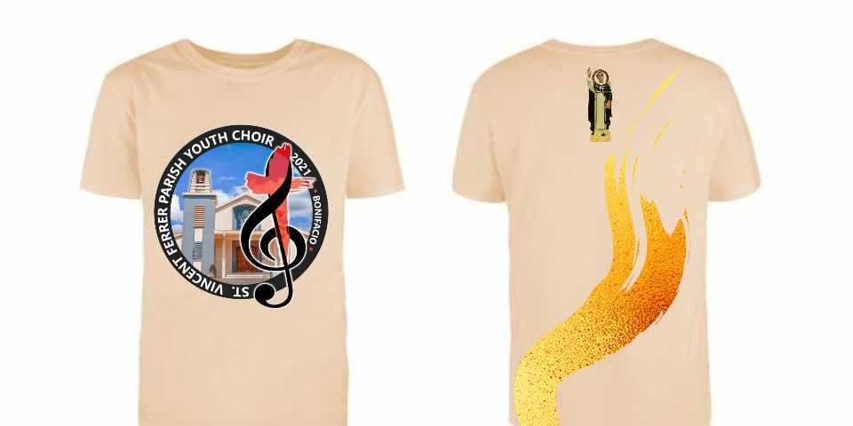

My Work



SVF Altar Server Logo
This design for the SVF Altar Server group in Bonifacio, Misamis Occidental features a central cross, chalice, and host, symbolizing service and devotion. A circular layout with a golden gradient conveys unity, while the laurel wreath adds honor. The clean font style reflects the group's role in the church community.

